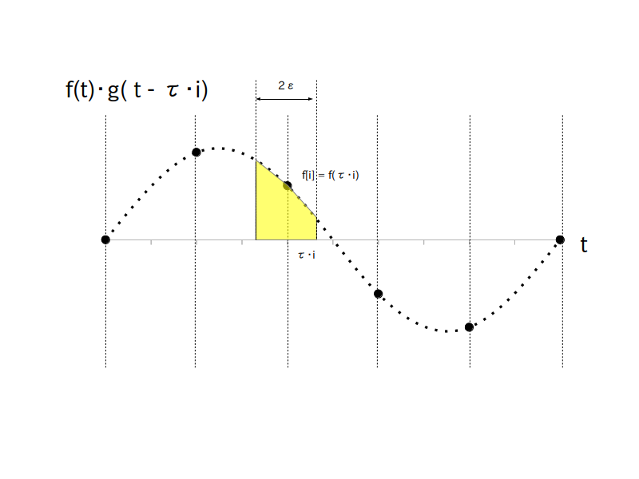

ここでは Z 変換が時間領域ディジタル信号 $f[i]$ に対するラプラス変換であることを説明します。
さてサンプリング元のアナログ信号を $f(t)$ とすると、サンプリングのアクティビティで説明した様に、$\tau$ [秒]をサンプリング間隔とした時、
\begin{align*} f[i] = f( i \cdot \tau ) \end{align*}
で表されます(図1)。
ここで簡単に考えるため、ある時刻 $i$ における $f[i]$ だけをラプラス変換することを考えます。
つまり
というアナログ信号 $f'(t)$ をラプラス変換します。
ところが深く考えないで $f'(t)$ をラプラス変換してみると、積分の幅が0になるため上手く行きません。
実際に計算してみると、$s = \sigma + j \cdot w$ を S 平面上の任意の複素数としたとき
になります。
そこで図2の様な窓関数 $g(t)$ を用意し、図3の範囲で $f(t)$ を切り出すことにします。
つまり $\epsilon$ を微小な正の実数としたとき、
というアナログ信号 $f'(t)$ に対してラプラス変換することにします。
ちなみに $2\epsilon$ で割っている理由は $\epsilon$ が非常に小さい時に積分値が 0 に近づくことを防ぐためです。

すると、今度は
\begin{align*} \textrm{F}(s) &= \int_0^\infty f'(t) \cdot \textrm{e}^{-st} dt \\ &= \frac{1}{2\epsilon} \int_{i \cdot \tau - \epsilon}^{i \cdot \tau + \epsilon} f(t) \cdot \textrm{e}^{-st} dt \\ \end{align*}になります。
ここで、本当はいろいろ条件が必要なのですが面倒なので全部条件を満たしていると考えることにすると、積分の平均値の定理より
\begin{align*}
\textrm{F}(s)
&= f(\xi) \cdot \textrm{e}^{-s \xi}
\end{align*}
を満たす $\xi$ が
\begin{align*} i\cdot \tau - \epsilon \leq \xi \leq i\cdot \tau + \epsilon \end{align*}の範囲に必ず存在します。
あとは $\epsilon \rightarrow 0 $ とすることで、
\begin{align*} \textrm{F}(s) &= f[i] \cdot \textrm{e}^{-s \cdot i \cdot \tau} \\ &= f[i] \cdot \textrm{e}^{- (s \tau) \cdot i} \end{align*}が得られます。
これを全てのディジタル時刻 $i$ について考えて足し合わせることで、結局ディジタル信号 $f[i]$ のラプラス変換は次のように表すことができます。
$\tau$ [秒]をサンプリング間隔、$s = \sigma + j \cdot w$ を S 平面上の任意の複素数としたとき、
\begin{align*} \textrm{F}(s) = \sum_{i=0}^\infty \{ f[i] \cdot \textrm{e}^{- (s \tau) \cdot i} \} \end{align*}以下準備中